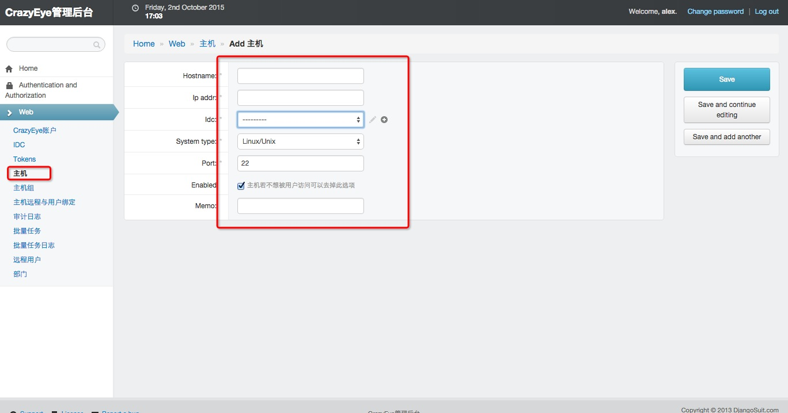

创建主机¶

创建主机与远程用户绑定关系¶
在创建完主机后需要把主机和远程用户绑定起来，一台主机可以与多个远程账户绑定，就像你可以用不同的账户登录远程主机一样，多台主机也可以共享同一个远程用户，比如多台主机的root密码是一样的

创建CrazyEye账户¶

设置批量任务最大并发数¶
CrazyEye以多进程并发的形式执行批量任务，你可以通过修改配置文件 settings.py 中的 MaxTaskProcesses 来修改批量任务的最大并发数，根据CrazyEye Server的配置可以设置不同的并发数，但并发数过高时反而可能会使整个批量任务过慢，我们的建议是最大并发不要超过CrazyEye server的CPU核数的2倍，例如你的设置是8核的，那 MaxTaskProcesses 的值最好不要超过16.
配置WebSSH¶
如果想允许用户通过WEB浏览器直接登录目标机器，需要在:code:`settings.py`中配置好WEB SSH连接信息
#还记得在安装CrazyEye时需要安装的Shellinabox吗,Well，你的WEB SSH支持就得依赖这个插件，事实上Shellinabox是一个独立的开源工具，我们只不需要在CrazyEye配置好如何调用它即可
#当你安装完Shellinabox后，执行shellinaboxd 即可启动该软件，然后执行netstat -tulnp |grep 4200查看其状态
shellinaboxd #启动shellinabox
netstat -tulnp|grep 4200
tcp 0 0 0.0.0.0:4200 0.0.0.0:* LISTEN
#接下来配置settings.py,找到WebSSH部分
WebSSH = ['localhost',4200] #把’localhost‘替换成你的Shellinabox服务的启动IP
#此时，再打开WEB页面,就可以直接从WEB登录啦！